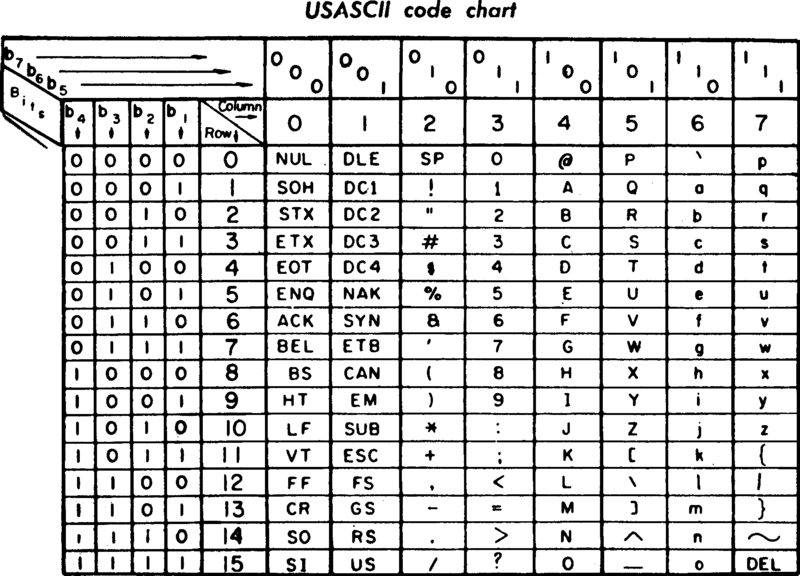

Teoría 202
Texto y Booleanos
1 Cadenas de texto
1.1 Cadenas de texto en Python
- Palabra reservada:
str - Literales:
"hola",'hola',"",'',f"hola {nombre}" - Dominio: desde 0 caracteres hasta lo que quepa en memoria
- Operadores:
- Cadenas:
+ - Comparación:
>,>=,<,<=,==,!=
- Cadenas:
1.2 Cadenas de texto: Representación literal
- Pareja de comillas simples, dobles, otras representaciones especiales
- Daremos preferencia a las comillas dobles
- Contiene una cadena de cero o más caracteres en su interior
- A veces querremos representar caracteres especiales: las propias comillas, saltos de línea, tabuladores, etc.
- Podemos utilizar secuencias de escape para representar estos caracteres
- El caracter
\indica que el siguiente caracter es especial
- El caracter
- Para el caso de las comillas, podemos utilizar el otro tipo de comillas
- Podemos utilizar secuencias de escape para representar estos caracteres
- Las cadenas no pueden contener saltos de línea, necesitamos utilizar
\npara ello
texto0 = "" # cadena vacía
texto1 = "Hola, mundo!" # cadena de texto normal
texto2 = 'Y Arquímedes dijo: "Eureka!"' # comillas simples para envolver comillas dobles
texto3 = "Y Arquímedes dijo: \"Eureka!\"" # caracter de escape para comillas dobles
texto4 = "Frase en\ndos líneas" # salto de línea1.3 Cadenas de texto: Dominio
- Una cadena de texto es una secuencia de caracteres
- Dicha secuencia puede ser de cualquier longitud
- Desde cero caracteres (cadena vacía)
- Hasta lo que quepa en memoria
- Python soporta cualquier caracter soportado en UCS-4
- Caracteres ASCII:
a,A,1,!,?, espacio en blanco - Caracteres especiales:
\n(salto de línea),\t(tabulador) - Caracteres Latin-1:
á,é,í,ó,ú,ñ,ü - Caracteres Kanji:
漢,字,漢字 - Caracteres Unicode:
💪,🙈,💩,💦
- Caracteres ASCII:
1.4 Cadenas de texto: Representación interna
- Python utiliza UTF-8 para representar las cadenas de texto
- UTF-8 es un formato de codificación de caracteres que permite representar cualquier caracter Unicode
- Cada caracter se representa con un número variable de bytes
- Los caracteres ASCII se representan con un byte
- Los caracteres no ASCII se representan con más de un byte
- La tabla ASCII es un acuerdo de representación de caracteres en inglés
- Cada caracter se representa con un número de 7 bits
- Ejemplos:
A(65),Z(90),a(97),0(48),!(33)
- La codificación de los caracteres no-ASCII sigue un principio similar
- Los detalles quedan fuera del alcance de este curso
1.4.1 Tabla ASCII

1.5 Cadenas de texto: Operadores
- Operadores de cadenas de texto:
- Concatenación:
+
- Concatenación:
- Operadores de comparación:
==,!=,>,>=,<,<=
Ejemplos:
texto1 = "Hola"
texto2 = "mundo"
texto3 = texto1 + ", " + texto2 + "!"
cond1 = "Hola" == "hola" # Falso
cond2 = "aa" < "ab" # Verdadero1.6 Cadenas de texto: Funciones
| Función | Descripción |
|---|---|
str() |
Conversión a cadena |
ord() |
Valor ASCII de un carácter |
chr() |
Carácter ASCII de un valor (str) |
len() |
Longitud de la cadena |
Ejemplos:
texto = str(42) # str: "42"
valor = ord("A") # int: 65
letra = chr(65) # str: "A"
igual = chr(ord("A")) # str: "A"
longitud = len(texto) # int: 21.7 Tipos de string especiales
- Python ofrece varios tipos de strings especiales
- Triple comilla
- Raw strings
- F-strings
1.7.1 Triple comilla
- Acepta comillas simples o dobles:
"""texto""",'''texto'''- Permite escribir cadenas de texto multilínea
- Útil para:
- Documentar funciones, clases, módulos, etc.
- Outputs de texto extensos
print("""⠀
⠀⠀⠀⡄⡀⠀⠀⠀⠀⠀⠀⠀
⠀⠀⣼⣿⠇⠀⠀⠈⢿⣿⣦⠀
⠀⢰⣿⣿⠀⠀⠀⠀⠀⢿⣿⡇
⠀⠸⣿⣿⣷⣶⣿⣿⣿⣿⣿⡇
⠀⠀⢹⣿⣿⣿⣿⣿⣿⣿⣿⡆
⠀⠀⡾⢿⣿⣿⠛⢿⣿⣿⣿⣿
⠀⠀⢷⡈⣿⣿⣆⢘⣿⣿⣿⡟
⠀⠀⠘⢿⣿⣿⣿⣿⣿⣿⡟⠁
⠀⣀⡄⣰⣿⣿⣿⣿⣿⣿⣿⠀
⠈⠛⢸⣿⣿⣿⣿⣿⣿⣿⣿⡇
⠀⠀⠈⠿⣿⣿⣿⣿⣿⣿⣿⡇
⠀⠀⠀⠀⢻⣿⣿⣿⣿⣿⣿⠇
⠀⠀⠀⠀⠸⣿⠁⠙⠃⢿⠟⠀
""")
# Credits: https://emojicombos.com/hollow-knight1.7.2 Raw strings
- Una
rinmediatamente antes de las comillas:r"texto"- Ignora los caracteres de escape
- Útil para expresiones regulares, rutas de archivos, etc.
fichero1 = "C:\\Users\\usuario\\archivo.txt" # Tenemos que escapar cada barra
fichero2 = r"C:\Users\usuario\archivo.txt" # La r indica que el contenide se toma literalmente1.7.3 F-strings
- Una
finmediatamente antes de las comillas:f"texto {variable}"- Permite incluir variables dentro de una cadena de texto
- Útil para formatear cadenas de texto
nombre = "Juan"
edad = 21
saludo1 = "Hola, me llamo " + nombre + " y tengo " + edad + " años" # Concatenando
saludo2 = f"Hola, me llamo {nombre} y tengo {edad} años" # F-string2 Booleanos
2.1 Booleanos en Python
- Palabra reservada:
bool - Literales:
True,False - Dominio:
True,False - Operadores:
- Lógicos:
and,or,not
- Lógicos:
2.2 Booleanos: Representación literal
- Los booleanos son un tipo de dato binario
- Solo pueden tomar dos valores:
TrueoFalse
- Solo pueden tomar dos valores:
- La primera letra mayúscula es obligatoria
2.3 Booleanos: Dominio
- Los booleanos representan valores de verdad
Truerepresenta verdaderoFalserepresenta falso
- Los booleanos son el resultado de aserciones lógicas
2.4 Booleanos: Operadores
- Operadores booleanos:
- Conjunción:
and - Disyunción:
or - Negación:
not
- Conjunción:
2.4.1 Tabla de verdad de los operadores lógicos
AND
a |
b |
a and b |
|---|---|---|
| ✅ | ✅ | ✅ |
| ✅ | ❌ | ❌ |
| ❌ | ✅ | ❌ |
| ❌ | ❌ | ❌ |
OR
a |
b |
a or b |
|---|---|---|
| ✅ | ✅ | ✅ |
| ✅ | ❌ | ✅ |
| ❌ | ✅ | ✅ |
| ❌ | ❌ | ❌ |
NOT
a |
not a |
|---|---|
| ✅ | ❌ |
| ❌ | ✅ |
2.4.2 Ejemplos de operaciones lógicas
ha_llovido = True
he_fregado_el_suelo = False
el_suelo_esta_mojado = ha_llovido or he_fregado_el_sueloaprobado_practicas = True
aprobado_teoricas = True
aprobado_problemas = False
aprobado = aprobado_practicas and aprobado_teoricas # Los problemas no cuentantengo_leche = False
tengo_agua = True
tengo_pure_en_polvo = True
puedo_hacer_pure = (tengo_leche or tengo_agua) and tengo_pure_en_polvoestoy_en_casa = False
llega_un_paquete = True
entrega_fallida = not estoy_en_casa and llega_un_paquete #
# El not tiene prioridad: (not estoy_en_casa) and llega_un_paquete2.5 Booleanos: Funciones
- Aunque en Python existe la función
bool():- NO ES ACONSEJABLE UTILIZARLA (No funciona como esperaríais)
- Evalua la veracidad de una variable depende del tipo de dato
- Un entero es falso si es 0
- Una cadena de texto es falsa si está vacía
- En su lugar, para obtener valores booleanos utilizaremos siempre
operadores de comparación:==,!=,>,>=,<,<=
Ejemplos:
# CUIDADO
verdadero = bool("True") # True
falso = bool("False") # True
# CORRECTO
valor = "No" # El usuario introduce "Si" o "No"
verdadero = valor == "Si" # False2.5.1 Ejemplos: El Bar Zoomer
- El Bar Zoomer sólo abre los fines de semana.
- El Bar Zoomer no admite menores, ni boomers, ni millennials.
edad = 21
es_mayor_de_edad = edad >= 18 # True
es_zoomer = es_mayor_de_edad and edad < 25 # True
# es_zoomer = 18 <= edad < 25 # Python soporta comparaciones encadenadas
dia_de_la_semana = "Lunes"
es_fin_de_semana = dia_de_la_semana == "Sábado" or dia_de_la_semana == "Domingo" # False
puede_entrar = es_zoomer and es_fin_de_semana # False2.5.2 Ejemplos: Derecho a beca
- Existen dos tipos de becas: las becas sociales y las becas de excelencia.
- Las becas sociales se otorgan a los nuevos estudiantes cuyos ingresos familiares no superen los 30.000€.
- Las becas de excelencia se otorgan a los estudiantes con una nota media igual o superior a 9.5.
ingresos_anuales = 500_000
num_matriculas = 1
nota_media = 9.8
primera_matricula = num_matriculas == 1 # True
ingresos_superiores = ingresos_anuales > 30_000 # True
beca_social = primera_matricula and not ingresos_superiores # False
beca_excelencia = nota_media >= 9.5 # True
beca = beca_social or beca_excelencia # TruePropuesta: Adapta el ejemplo de las becas para que sea interactivo (print() y input()) y comprueba su funcionamiento para distintos valores de entrada.